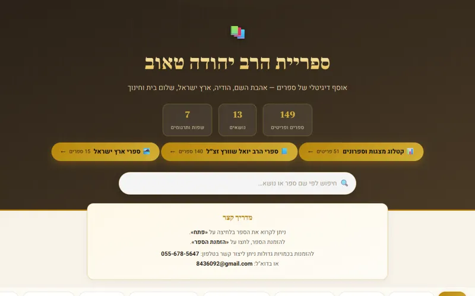
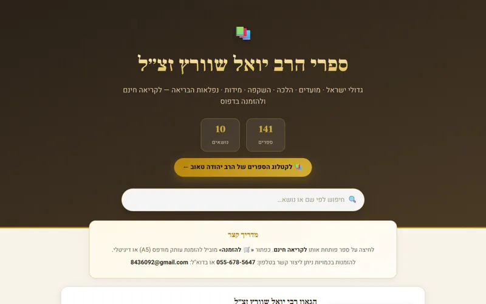
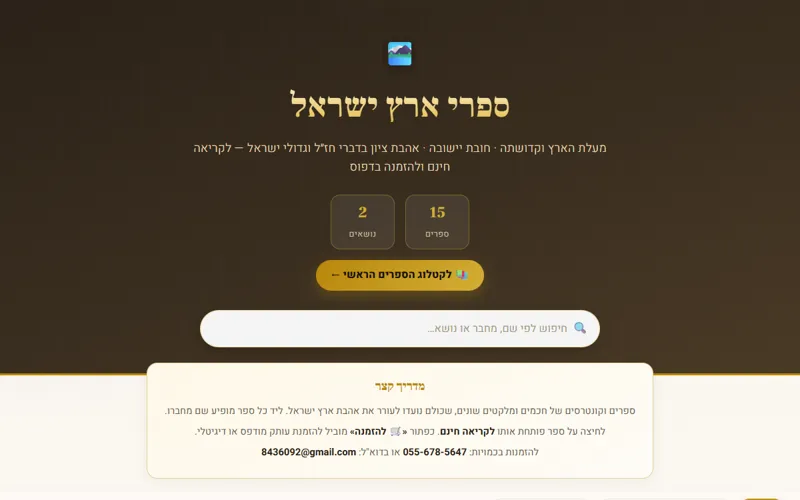

📕
ספרים
כל סדרות הספרים של הרב יהודה טאוב – ספרים, ספרונים ומצגות, עם קישור להזמנה
5 פריטים
סדרות הספרים (3)

ספרי הרב יהודה טאוב
כל הספרים לפי נושאים: אהבת השם, ארץ ישראל, הודיה, חינוך, מעגל החיים והשנה, פרשת השבוע, שלום בית, שמחה ועוד – ע…

ספרי הרב יואל שוורץ
141 ספרים של הגאון רבי יואל שוורץ זצ״ל, לפי נושאים – לקריאה חינם ולהזמנה בדפוס

ספרי ארץ ישראל
15 ספרים וקונטרסים במעלת ארץ ישראל ובחובת יישובה – לקריאה חינם ולהזמנה בדפוס